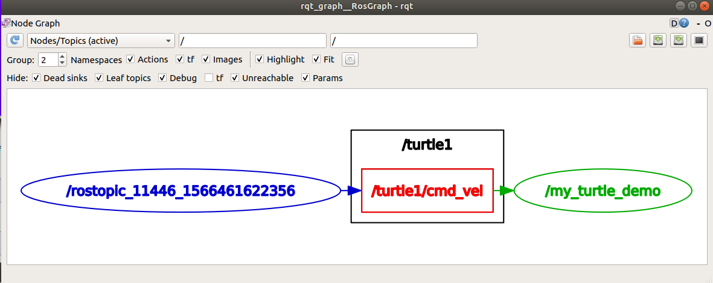

第五节 ROS roslaunch
这一节介绍roslaunch，roslaunch从一个文件来启动Nodes。之前我们见过的rosrun是从Nodes名称来启动。
1. 使用
roslaunch [package] [filename.launch]
2. 实例
之前我们写过一个建立（第一章第三节）并编译过一个叫做beginner_tutorials的package，运行
cd ~/catkin_ws
source devel/setup.bash
roscd beginner_tutorials
我们习惯把 launch 文件放在一个package下一个叫 launch 的文件叫里，因此执行：
mkdir launch
cd launch
3. 写 launch 文件
一个简单的 launch 内容如下，我们命令为 demo.launch，保存在 launch/ 文件夹下。
<launch>
<node pkg="turtlesim" name="my_turtle_demo" type="turtlesim_node">
</node>
</launch>
回到 ~/catkin_ws/src 文件夹，输入
cd ~/catkin_ws/src
roslaunch beginner_tutorials demo.launch
即可看见出现了小海龟。
可以看出，launch 文件是按照 xml 文件格式组织的，内容包含在 \
此时新的打开新的终端，输入：
rostopic pub /turtle1/cmd_vel geometry_msgs/Twist -r 1 -- '[2.0, 0.0, 0.0]' '[0.0, 0.0, -1.8]'
可以看到海龟在转圈，再打开一个终端，输入
rqt_graph
看到当前的 Topics 的流动如图：

4. 总结
以上是 roslaunch 的内容，其实也不难，ROS 的 launch 文件一般放在 package 包中一个叫 launch 的文件夹里，写的格式为 xml，更多 xml 的内容参考这里。
下一节介绍 rosmsg。